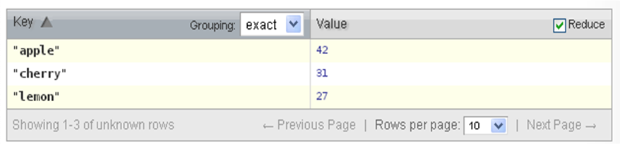
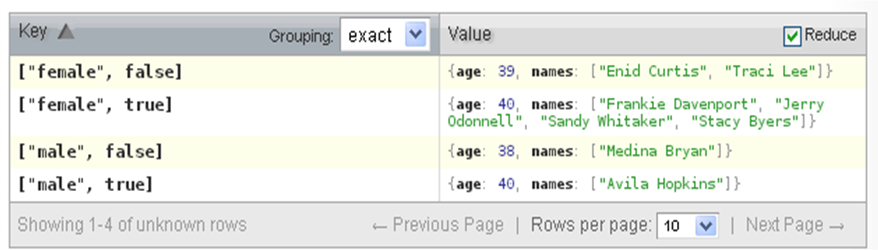
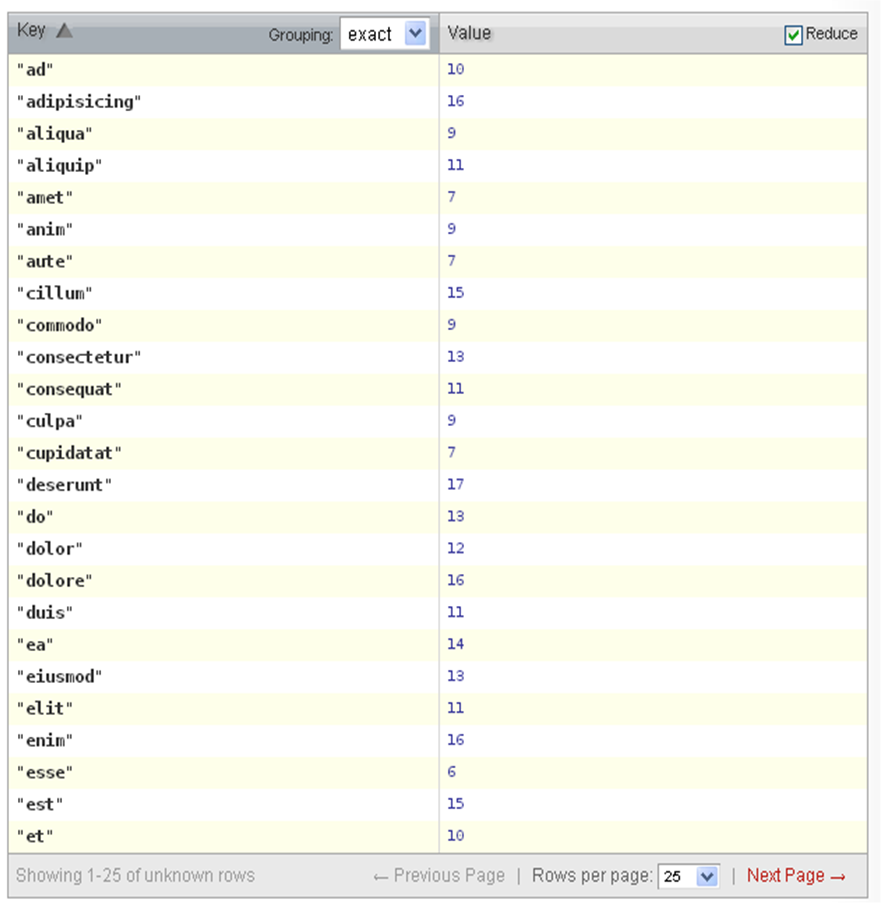
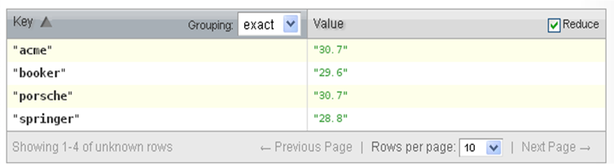
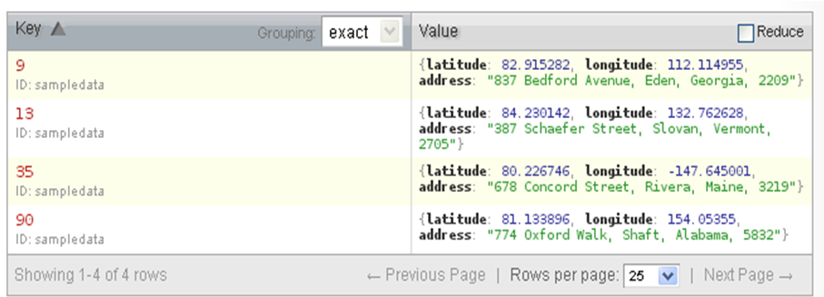
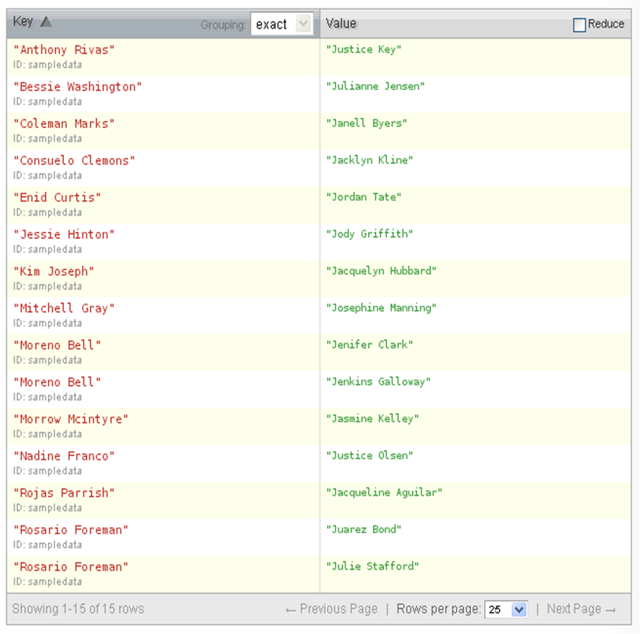

Due date:
Overview
Your task is to install a NoSQL database using
CouchDB
and write some queries.
Turnin
Turnin in the file queries.txt
using the turnin page.
You may turnin your assignment as many times as you like.
Grading
The assignment will be graded for functionality.
Groups
The assignment permits you to work in groups of at most two.
I will assume that the same groups for the SQL, part 2 assignment.
E-mail me if your group has dissolved.
Using CouchDB
Download and configure the software for your system.
Then create a database, and within that database a document. To
that document add the data in
the file data.txt.
Deliverables
A text file, queries.txt,
containing solutions in JSON to the following queries.
The file should be formatted as follows (values of the fields
will vary!).
----Query 1: Count the randomArrayItems
{
"_id": "_design/countRandomArrayItems",
"_rev": "2-b4e0bf693aea17edffd8a05ea80b9989",
"language": "javascript",
"views": {
"countRandomArrayItems": {
"map": "function(doc) {\n for (var i in doc.data) {\n var person = doc.data[i];\n emit(person.name, 1);\n }\n}",
"reduce": "function(keys, values, rereduce) {\n return values.length;\n}"
}
}
}
----Query 2: Names of people with max age by gender and isActive
...
-
Count the
randomArrayItems.
Result:

-
Name(s) of the person(s) with the maximum age, and their
age(s) by gender and whether they are active or not.
Result:

-
A count of the people by
tags, that is, count all the
people with the given value in the tags array.
Result:

-
The average age of people by company.
Result:

-
The JSON of the lattitude, longitude, and address of each
employee that has a lattitude of more than 80.
Result:

-
Names of people and their frineds that start with the letter "J"
if they have at least one friend whose name starts with the letter "J".
Result:

|

 Home
Home